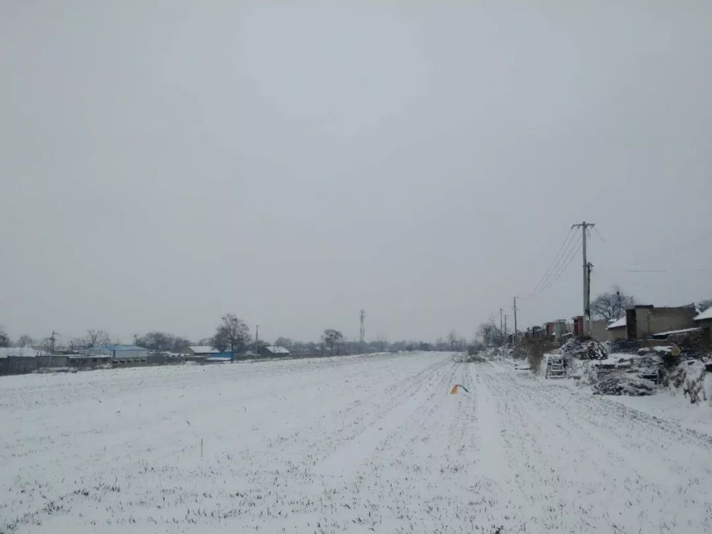
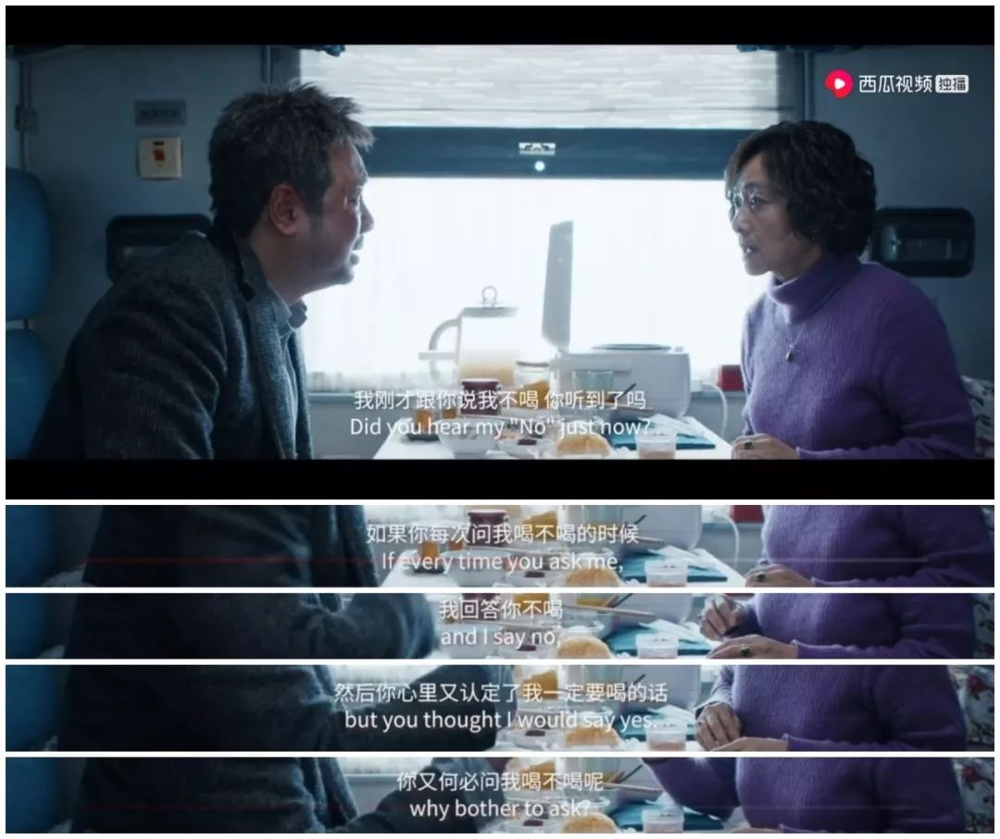
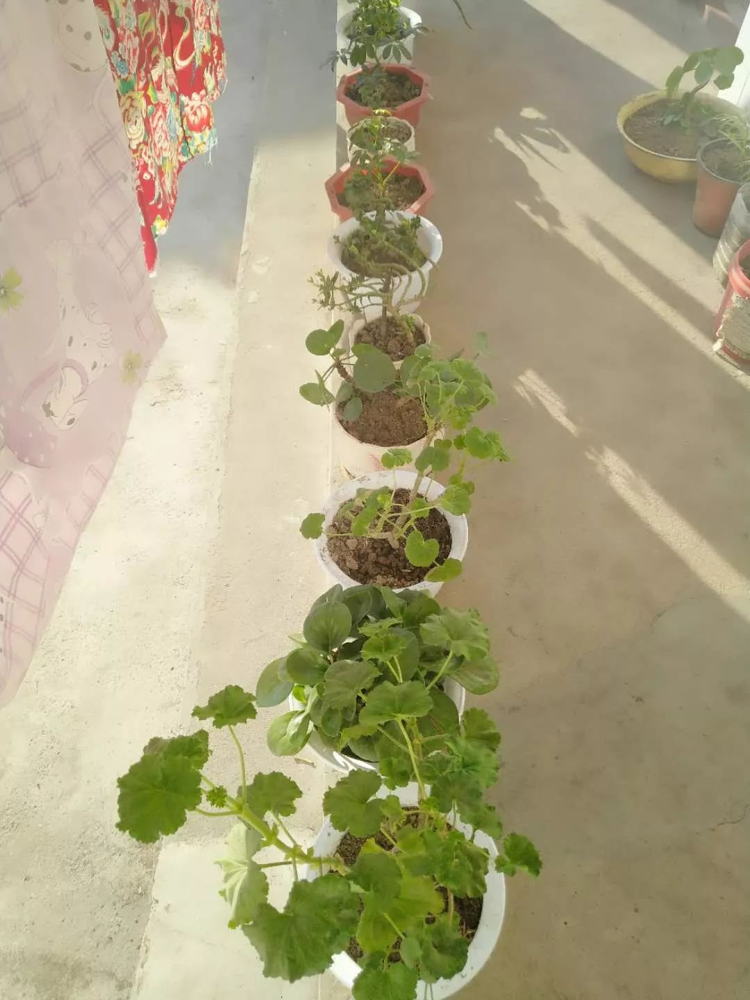
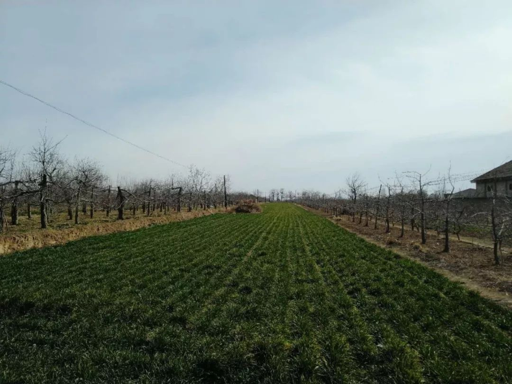

复工在即，年轻人走后，父母还会坚持戴口罩么？ - 经济观察网 － 专业财经新闻网站
原文链接 备份链接 经济观察网 李沁/文 2月10日起，全国各地开始陆续复工，时刻盯着父母戴口罩、少出门的年轻人也将先后离开家乡。不少人此时产生了担忧：父母还能在家待多久？儿女走后，父母还会坚持戴口罩么？ 对部分年轻人而言，劝父母“戴口 …
在这个艰难又漫长的冬季，每个人都被混沌不安的信息洪流所裹挟。我们关注着每日的疫情动态，抱怨着在家办公的琐屑不便。疫情将我们的生活打回原形，我们不得不为每天的一蔬一饭耗费心力，为跋涉到小区门口取外卖快递而叫苦不迭。
恍然间我们似乎意识到现代都市生活秩序的脆弱，正如活字君在采访戴锦华教授时她曾谈到的：“‘宅生存’对社会、对体制、对制度的依赖性更强了。外卖小哥摔了个跟头你就要挨饿；全球物流的货运系统中，任何一个环节出问题的话，你的供应就断掉了；如果停电了的话，你就是废物了。在这样一种生存环境下，我们每个人都可以是自足的个体：我们不关注他人，不需要他人，他人对我们来说没有意义。这里所说的‘他人’,还是我们身边的他人，更不用说遥远的‘他人’。“
那么，被视为”前现代社会“的广袤的农村，又是如何抵挡和克服此次瘟疫的呢？在严肃媒体的报道里，这块生活着数亿人口的土地几乎消失不见；在抖音和b站上，充斥着”村长硬核喊话“”挖掘机铲路“等极富魔幻色彩的视频，为不得不宅居在家的我们提供生猛的消遣。
但是，疫情之下，真实的乡村生活图景究竟如何？
为此，活字君邀请了两位故乡在农村的朋友，写下他们在这个冬天里的所见所思所感。他们都是少小离家、读书求学的北漂青年，受疫情影响，交通阻断，他们被迫在家中度过了“十几年来和家人相处最长的一段时光”。缓慢的生活节奏让他们得以审视一度迫切想逃离的故乡，帝都与村庄截然不同的生命状态所造成的撕裂感在疫情之下似乎更为浓烈。
阅读这两位朋友的文字，活字君体会到，这场在国家层面撕开裂口的瘟疫，也是让我们思考存在与虚无、探索通往内心安宁之路的推力。但是，正如加缪曾在他的《鼠疫》中写道：“它也许可以使有些人思想得到提高，然而，看到它给我们带来的苦难，只有疯子、瞎子或懦夫才会向鼠疫屈膝。”
疫情阴影下，我在故乡开始“流浪”
帝都自媒体人 万里悲秋常作客
被困在老家20多天后，我心生烦闷，对父母说，“你们怎么可以忍受，一辈子就在这方圆几十里的空间活动呢？”二老默然。
我的老家坐落于中条山到黄河谷地过渡区的山麓冲击扇上，加上本地又是黄土高原的边缘地带，特殊的地理环境导致其在地貌表现上为：沟壑万千，极不平坦。

道 摄影 | 万里悲秋常作客
疫情发生之后，我一下子又意识到自己的“流民”身份。
对于生养我的这块土地，我已经万分隔膜了。当年懵懂，上大学时把户口迁到所在城市，毕业没有留在那里，又迁回来，只不过原来在家里户口本我的那一页已经被撕掉，现在是独立的城镇户口。
而对于北京这座大都市，平时没感觉到什么“不善”。当看到为了抗“疫”，各个小区严防堵截，用各种手段将租户“隔离”出去时，我突然意识到自己“外省人”的身份。“一二线留不下肉身，三四线放不下灵魂。”此之谓也。
朱大可在《流氓的盛宴》一书中，将“流氓”被还原为一个中性词：一个面临自我身份认知危机的个体。“一个标准的流氓就是丧失了身份的离乡者，他持续性地流走，并且保持了一个精神焦虑的容貌和社会反叛的立场。”
我想，我还真是个“流民”，这些日子一直在故乡“流浪”。

雪 摄影 | 万里悲秋常作客
春节过后，我曾经试图三次“逃离”未遂。最初定的是2月2日的火车票，后来那个车次停运了；然后改签到了2月6日，结果2月5日晋南地区天降祥瑞，“欲渡黄河冰塞川，将登太行雪满山。”
2月10日，我所在的镇发现了有武汉迁移史而瞒报的疑似病例，基层防疫工作压力倍增，小小的县城也开始实行“封城”了。我买的2月12日的车票最终还是退掉了。
2月14日，北京市又要求所有返京人员，均应居家或集中观察14天。既然返京也是关“禁闭”，那还不如继续在老家隔离？于是，我彻底打消了近期返京的打算。
这应该是近10年以来，我和父母在一起生活最长的一段时期。我一直遗憾没有带二老去过电影院看时新的电影，一方面电影院在县城，交通不便；另一方面，他们也没那样的闲情逸致，甚至会觉得那很奢侈。
妹妹已于去年出嫁，由于疫情的原因，她今年不能“回娘家”。吃饭的时候桌上少了一双筷子，这个家也着实变得落寞了一些。
在除夕夜零点之后，我把手机上的《囧妈》投屏到智能电视上，一家三口欣赏了这部“免费大片”。只是徐峥这部探讨母子关系的电影显然不是二老的菜，一个昏昏欲睡，一个看完之后疑惑：“这就完了？”

电影《囧妈》剧照
我给我妈挑了不少电视剧，其中《父母爱情》她看得最入迷，竟然能够熬夜到凌晨追剧。在天气好的时候，我会把她养的花搬到院子里晒太阳，几番挪动，这些本来蔫耷耷的植物也有了不少生机。
我妈以前是不养花的。2017年她的膝关节检查出了问题，从此以后不能再做农活，只能做一些简单的家务。而这对于忙碌了一辈子的母亲而言，是个不小的打击。我怕她长久在家里闷下去，会得抑郁症，因此建议她养花。“有时在家看着这些长势喜人的花，心情还真是不一样。”听她这么说，我也很欣慰。

妈妈养的花 摄影 | 万里悲秋常作客
我家门口不远处有一条通往山里的公路，道路修得极宽，一点也不像普通的乡道，两边都是田地，人烟很少。我经常会在饭后在这条道路散步，旷野中，能听到远处广播车在流动宣传防疫注意事项。一不留心就会走到下一个村口，迎接你的便是严阵以待的基层防疫检查路障。

乡村路障 摄影 | 万里悲秋常作客
当我走到自家田地时，一眼就能看见一座坟茔，那是我爷爷的魂归之处。爷爷走了快四年了，但我的那滴眼泪一直没有流出来。我清楚记得，2015年9月末，我们一大家族的人围绕在他身边，“等待”他的死亡。
这很残忍，但也很普遍。一个普通农家没有经济能力将一位老人在临终前送进ICU抢救。寿则多辱。我至今记得爷爷在临死前眼神中对人世间的那种眷恋和不舍。
随后的丧事，我亲眼目睹了农业文明在这个信息化社会的尴尬。在那种需要表演“孝子贤孙”的古老礼仪中，我一点也哭不出来。在那一刻，我明白了，我受到的教育已经让我接受了另一种文明和价值观，但我生长的那块土地千年难移。

坟 摄影 | 万里悲秋常作客
一个国家有一个国家的现代化，一个家族也有一个家族的现代转型。在中国的近现代史上，一个家族有不少机遇走出千年不变之困局。在我看来，《父母爱情》就是中国百年家族变迁史的一个隐喻。
梅婷饰演的安杰一开始就被打上“资产阶级大小姐”的标签，她的家族至少在清末明初就已经告别农业文明。郭涛饰演的江德福是农民出身，他通过参军在新政权中改变了家族命运。而到了新中国成立之后，社会结构重新洗牌，两个本不可能相爱的人，相互搀扶，在动荡的历史中平稳过度。

电视剧《父母爱情》剧照
再往后，改革开放恢复高考也是一个重要的契机，但是我的家族在这些历史关口全部“踏空”了，直到我作为一个90后通过高考考上大学，家族传承中才出现了新的文明基因，以及突变的可能性。
但人总是很难和生长的土地彻底切割。贫穷并非原罪，但是在物质匮乏的环境中塑造起来的个性和心理结构，却会在无形中影响你每一个具体判断和抉择。我清醒地意识到自己骨子里消磨不尽的小农意识，我这一生可能都要和生长我的土地做抗争：我不要活成人们告诉我应该活成的样子，生于农家难道就不能追求个性解放和人格独立？

摄影 | 万里悲秋常作客
在我20岁以前，最触动我的一句话是：“我奋斗了18年，才能和你一起喝咖啡。”在我30岁之前，又被另外一句话戳中——“胜天半子”，这是电视剧《人民的名义》中祁同伟这个人物的隐喻。
“日暮乡关何处是，烟波江上使人愁。”流浪流浪，流往何方？
“我们这代人从未经历过如此深刻的冬天”
90后教育从业者 惊蛰
又是一场大雪，连下两天，透过窗帘缝隙望出去，整个村子都裹在望不尽的苍茫里。天没放晴，灰白晦暗的冷空气里只有零星几家晚起的炊烟伴着尚未停的纷扬雪片摇晃，淡淡的白。街上果然一个人也没有，这样的天儿再加上疫情下连日紧张，整个村子陷入了从没有过的寂寞。
醒来的时候屋里只有我自己，父母一大早就去铲雪了，不知道他们具体几点出发。这些天都是这样，每天早晨睁眼父母都已经出门干活了，今天走得更早。我们这里是蔬菜生产基地，整个乡包括我们村里好多农户都有温室暖棚，普通农户都是春种秋收冬天歇个冬缓缓劲儿，菜农们反而冬天最忙，尤其是刮风大雪的日子，起早贪黑防风除雪，不分白天还是半夜，雪见收势立刻行动，去晚了雪太厚会压断温室的钢筋架子，忙活了一冬的收成就要归零。

故乡雪景 摄影 | 惊蛰
最近发生的一切几乎把所有人都卷进了这场史无前例的浩劫，我的父母和他们的菜农朋友们也不例外。我们称这次疫情是国难，举国都在拼尽全力抗疫。最初的惊骇之后，有人开始借助各类媒介讯息和每日一更的数据试图分析疫情发展趋势，企盼早点迎来折线图上的拐点；有人明知前方生死难测却依旧逆行；有人在反思，关乎制度、关乎善与恶、关乎生命的顽强和脆弱；有人在祭奠，那些老老实实过日子却突然殒命的人，那些把自己的生命交付给责任和使命的人，他们应该被记住。当然也有人在纷繁乱象下原形毕露……全民参与使“抗疫”这个厚重的概念不再是轻描淡写的两个字，它背后是目前正在经历这一切的数不尽的小家和个体，农村也没有先天特权能够借以游离其外。
看着父母每天都按时出门照例晚归，总给人一种假象，似乎生活还和从前一样重复着让我们怀念的一地鸡毛。我也不止一次回忆起从前经常和父母开的玩笑，什么时候在帝都生活累了就回来过逍遥自得的神仙日子，盖上三间小房，依照四时节气把自己的一亩三分地侍弄得当就可以衣食无忧，所有收获自产自销，真是现实版桃花源。
然而这些天明明过得跟梦一样。大年初一，隔着院墙看到大娘站在自家门口，远远地喊了一声“过年好”，算是拜了年。大年初二父亲从市场回来，进门第一句话就是菜价降了，好多收菜的老板们都没来，价格还不如往年四五月份收尾的时候。“回来路上，听几个人说，再降就不干了，认赔吧”，父亲边说边现出苦笑，眼神刚好对上我。
我不太愿看父亲的眼睛，扪心自问，那一刻心里的疼痛比看到网上不断上升的数字要更重，因为切肤。可能是人性的复杂之一种，坏事儿没发生在自己身上时，总能一边对受害者深表同情为其据理力争一边自己暗暗侥幸。一旦真正波及到自身，才意识到从前对他者的同情再怎么真挚也还是微不足道。没有相同的经历不敢说感同身受。
无法判断这次疫情会给多少人留下抹不掉的苦涩记忆，也很难估量从国家到个人的损失和创痛。希望春天真正到来的时候我们在欢呼胜利的同时不要迅速将这一切遗忘，也不要停止反思和对生命的热忱。
以前总是拼了命的工作奔跑不敢放松，很少有机会静下来想想生命生存和生活，也绝不会想到在这样漫长得望不到头的冬天里和千万人一起被迫停下来，突然拥有了大把可以挥霍的时间。跟父母依偎在一起的这段日子，除了每天关注数据关注热点逼着自己做运动外，我也终于有机会通过父母和那些跟他们一起奋斗一样生活的同乡们来认真体会到底什么是生存。

故乡明净的天空 摄影 | 惊蛰
生死如此靠近我们的时候，他们偶尔稀松平常的聊天内容都会超出我的想象。在他们身上有一种近乎生猛的无畏，可能是无知无畏，也可能是被生活磨出了超越常人的旺盛生命力，看起来彪悍豪勇似乎没什么可怕的。
想起来除夕那天上午，全家跟往年一样，贴春联，备中饭，年味儿飘在院子的各个角落。我把刚刚看到的确诊数字告诉母亲，跟她描述病毒传染性很强目前蔓延也很快。母亲切菜的刀有条不紊地落在砧板上，“不用怕，怕也没用，什么时候害怕都是最没用的，赶紧想法子就行了，老百姓还得过日子，别添乱就行了。”初二那天听说菜价下跌后她也这么说：“降价就降价，那也得好好侍弄，吃菜的人多着呢，全都停下来不弄了大伙吃什么。”
不得不说，新媒体时代生活得如鱼得水的总是年轻人。倚赖对各类媒介的灵活运用，大灾大难面前也通常会掌握第一手信息、先度过惊骇无措的阶段。每每到危难时刻，生活在小地方的人们就会成为被担忧的对象，我们感动于人与人之间的善意和温暖，但似乎被我们担忧的乡民们在极端条件下总能表现得更从容不迫，可能真的是无知无畏吧，但我还是愿意理解为是乡村的广袤天地和雨雪风霜练就了他们的勇敢。
写到这里，父母回来了，父亲又接到通知去村口截路登记过往车辆。从初八左右开始，几乎每天下午都要到岗上班，或是巡街或是在路口登记。我们这里整体控制得比较严，目前全县没有一例确诊，但刚开始工作难度是比较大的，街上三三两两聚集的人赶走了又回来，都是乡里乡亲也不便重说，只能一次一次连吓带劝。我又把那个问题问了一遍：“爸你怕不怕，为什么不拒绝呢？”“那能咋办，总得有人去，这几天也还行，大伙意识提高了，出门的人不多了。”
我总觉得这场雪过后春天就要来了。元宵节那天我在门前晒太阳，那几天升温特别暖和，也是这种感觉，立春到了，春天就来了。还写了一段文字留着春天真正到来的时候发个朋友圈：
今天和昨天一样，中午吃过饭，照例是看数据刷消息，照例是不出门静坐晒太阳，午后没有风，很暖和。前几天刚下过一场雪，房檐的冰柱化开了，水滴下来砸在地上，纷纷溅起小朵水花。就那么坐在太阳底下原地不动聚精会神俩小时，裤子晒得发烫。可能是因为天气转暖的缘故，狗子和猫都格外活跃，互相追逐着跑过来跑过去，看起来免疫力极强精力无限。戴上眼镜翻看以前的照片和各种截图，画面一帧帧清晰起来：北京的蓝天、内蒙沙漠刺眼的阳光、湘西的夜景……这一年走过的路说过的话开过的玩笑收过的关怀和一些弥补不了的遗憾都被勾起来，无声无息，交错重叠。看着看着就觉得看到了生活的本貌，有希望的感觉冒出来了，越来越有底气，春天的底气。

大橘为重 摄影 | 惊蛰
我们这代人从未经历过如此深刻的冬天，我想早一点和这些深刻说再见。但不能急，沉住气慢慢等吧，等着离我们远隔千里的另一片土地再次醒来的时候，告别要痛快一点。
父亲套上袖章准备出发了。“戴上口罩”，母亲又啰嗦了一遍。
end
活字文化
成就有生命力的思想
原文链接 备份链接 经济观察网 李沁/文 2月10日起，全国各地开始陆续复工，时刻盯着父母戴口罩、少出门的年轻人也将先后离开家乡。不少人此时产生了担忧：父母还能在家待多久？儿女走后，父母还会坚持戴口罩么？ 对部分年轻人而言，劝父母“戴口 …
原文链接 备份链接 各地民间对“武汉人”的恐惧和谩骂不忍卒读，恐惧是远比病毒更凶猛的疾病。 口述 | 黄 政 整理 | 金 姬 我是武汉人，毕业来上海已经十多年，在上海落户安家也已七年。因为我和妻子工作较忙，去年夏季开始我父母便从武汉来沪 …
原文链接 备份链接 母亲在服满十年刑期后终于出狱归家，不料又赶上疫情爆发。将这两者同时消化、融入自己的生活着实不易。这样戏剧性的故事，就发生在今天的来信者半脸身上。分离、重逢、悲剧、喜剧、恐惧、快乐，时刻在我们的身上上演。将它们打碎、糅 …
原文链接 备份链接 中国科学院心理研究所的研究员高文斌，是2003年北京小汤山“SARS患者与医护人员的心理干预”项目和“中科院心理所非典心理咨询热线”的负责人。 在接受本刊采访时，他认为，这次新冠疫情，尤其需要加强社会层面的心理引导和 …
原文链接 备份链接 武汉封城仍在继续，平稳的物价，有序的管制，保证了城中百姓的安稳生活，也多少让隔离中的人们陷入了日夜循环的麻痹中，时间概念逐渐模糊。今天，单读作者晓宇的疫区日记继续更新，日记同时发表在晓宇个人公众号：世 …